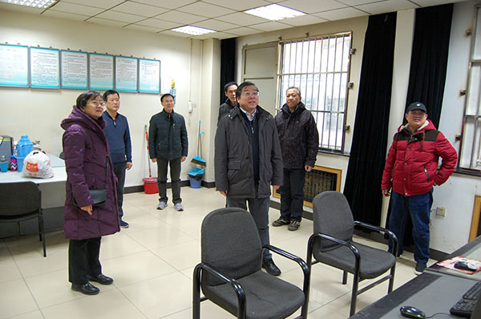
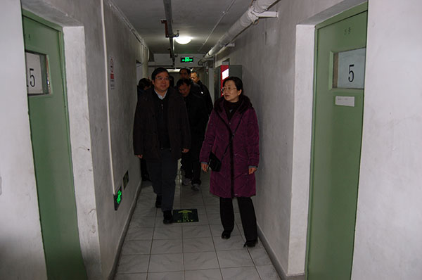
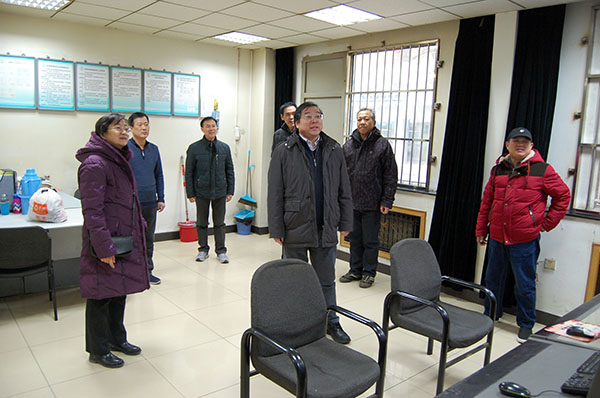
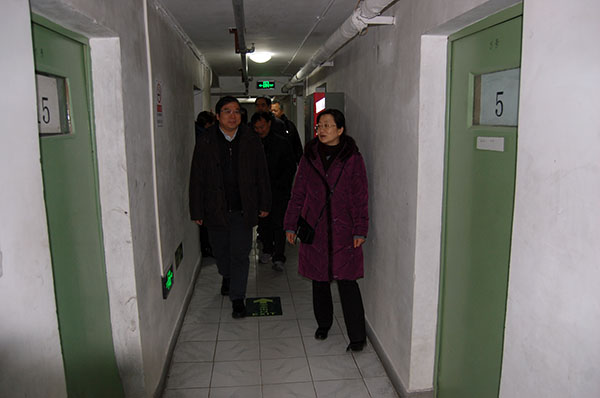

|
2019年2月3日上午，范静书记、刘录祥副所长带领条件保障负责人和相关人员，赴所总值班室、栽培育种楼、品种资源楼和北圃场地下室集体宿舍，慰问春节期间坚守工作岗位的条件保障处安全值班人员。 范静书记、刘录祥副所长详细询问了节日期间的值班、各类安全设施设备运行、集体宿舍居留人员情况，对他们为所内安全运行、春节期间辛勤工作表示感谢，并向一线值班人员发放了慰问品。
条件保障处   (责任编辑：所办公室) |
|
2019年2月3日上午，范静书记、刘录祥副所长带领条件保障负责人和相关人员，赴所总值班室、栽培育种楼、品种资源楼和北圃场地下室集体宿舍，慰问春节期间坚守工作岗位的条件保障处安全值班人员。 范静书记、刘录祥副所长详细询问了节日期间的值班、各类安全设施设备运行、集体宿舍居留人员情况，对他们为所内安全运行、春节期间辛勤工作表示感谢，并向一线值班人员发放了慰问品。
条件保障处   (责任编辑：所办公室) |
关于印发《中国农业科学院作物科学研究所展厅服务管理暂行办...
条件保障处工作人员信息 内设部门 姓名 职务职称 分管工作 联...
所属各创新研究组： 截止到2018年5月24日，经科研处审核通过并...
按照中央国家机关人口和计划生育委员会办公室《关于开展201...
爱生活、展风采，快乐“三八节”...
2016年是开展幸福工程 救助贫困母亲行动的第19年，按照中央国家...